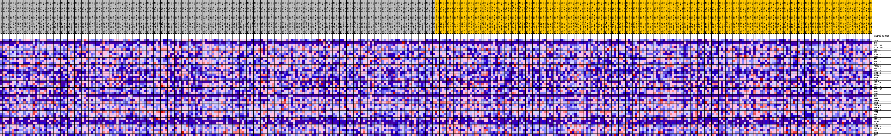
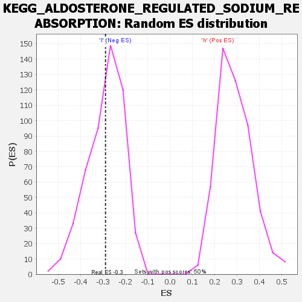

| | | Dataset | VCAN.VCAN.cls#h_versus_l.VCAN.cls#h_versus_l_repos |
| Phenotype | VCAN.cls#h_versus_l_repos |
| Upregulated in class | l |
| GeneSet | KEGG_ALDOSTERONE_REGULATED_SODIUM_REABSORPTION |
| Enrichment Score (ES) | -0.28927907 |
| Normalized Enrichment Score (NES) | -0.99638754 |
| Nominal p-value | 0.44444445 |
| FDR q-value | 1.0 |
| FWER p-Value | 1.0 |
Table: GSEA Results Summary
 Fig 1: Enrichment plot: KEGG_ALDOSTERONE_REGULATED_SODIUM_REABSORPTION
Fig 1: Enrichment plot: KEGG_ALDOSTERONE_REGULATED_SODIUM_REABSORPTION
Profile of the Running ES Score & Positions of GeneSet Members on the Rank Ordered List
| SYMBOL | TITLE | RANK IN GENE LIST | RANK METRIC SCORE | RUNNING ES | CORE ENRICHMENT | | 1 | KRAS | na | 1433 | 0.089 | 0.0234 | No |
| 2 | IRS4 | na | 1840 | 0.083 | 0.0622 | No |
| 3 | HSD11B1 | na | 5365 | 0.054 | 0.0285 | No |
| 4 | SLC9A3R2 | na | 5928 | 0.051 | 0.0465 | No |
| 5 | ATP1A1 | na | 7357 | 0.043 | 0.0447 | No |
| 6 | SFN | na | 8932 | 0.036 | 0.0359 | No |
| 7 | SCNN1B | na | 10467 | 0.029 | 0.0241 | No |
| 8 | PIK3R5 | na | 11413 | 0.025 | 0.0208 | No |
| 9 | IRS1 | na | 11547 | 0.024 | 0.0318 | No |
| 10 | ATP1B3 | na | 11886 | 0.023 | 0.0384 | No |
| 11 | IGF1 | na | 13694 | 0.016 | 0.0146 | No |
| 12 | PIK3CD | na | 13702 | 0.016 | 0.0233 | No |
| 13 | PIK3R3 | na | 13890 | 0.015 | 0.0284 | No |
| 14 | ATP1A3 | na | 14604 | 0.013 | 0.0225 | No |
| 15 | SCNN1G | na | 15487 | 0.010 | 0.0119 | No |
| 16 | NEDD4L | na | 21099 | -0.001 | -0.0893 | No |
| 17 | FXYD2 | na | 22075 | -0.003 | -0.1053 | No |
| 18 | SGK1 | na | 22360 | -0.004 | -0.1084 | No |
| 19 | ATP1B4 | na | 22751 | -0.005 | -0.1128 | No |
| 20 | NR3C2 | na | 25809 | -0.013 | -0.1610 | No |
| 21 | ATP1B2 | na | 28264 | -0.020 | -0.1944 | No |
| 22 | HSD11B2 | na | 28465 | -0.020 | -0.1867 | No |
| 23 | PRKCB | na | 29388 | -0.023 | -0.1907 | No |
| 24 | PRKCA | na | 29393 | -0.023 | -0.1780 | No |
| 25 | INS | na | 30964 | -0.027 | -0.1913 | No |
| 26 | MAPK1 | na | 33245 | -0.034 | -0.2140 | No |
| 27 | PRKCG | na | 34922 | -0.038 | -0.2232 | No |
| 28 | MAPK3 | na | 35627 | -0.040 | -0.2138 | No |
| 29 | PIK3CG | na | 39795 | -0.051 | -0.2610 | Yes |
| 30 | PIK3CB | na | 39858 | -0.051 | -0.2338 | Yes |
| 31 | PIK3R2 | na | 40426 | -0.053 | -0.2149 | Yes |
| 32 | PDPK1 | na | 41401 | -0.055 | -0.2019 | Yes |
| 33 | PIK3R1 | na | 42920 | -0.060 | -0.1964 | Yes |
| 34 | ATP1A4 | na | 43558 | -0.062 | -0.1739 | Yes |
| 35 | ATP1A2 | na | 45489 | -0.067 | -0.1715 | Yes |
| 36 | FXYD4 | na | 46328 | -0.070 | -0.1479 | Yes |
| 37 | KCNJ1 | na | 47628 | -0.074 | -0.1302 | Yes |
| 38 | SCNN1A | na | 47874 | -0.075 | -0.0930 | Yes |
| 39 | PIK3CA | na | 49464 | -0.081 | -0.0769 | Yes |
| 40 | ATP1B1 | na | 50995 | -0.089 | -0.0556 | Yes |
| 41 | INSR | na | 53894 | -0.111 | -0.0467 | Yes |
| 42 | IRS2 | na | 54795 | -0.129 | 0.0085 | Yes |
Table: GSEA details [plain text format]

Fig 2: KEGG_ALDOSTERONE_REGULATED_SODIUM_REABSORPTION
Blue-Pink O' Gram in the Space of the Analyzed GeneSet

Fig 3: KEGG_ALDOSTERONE_REGULATED_SODIUM_REABSORPTION: Random ES distribution
Gene set null distribution of ES for KEGG_ALDOSTERONE_REGULATED_SODIUM_REABSORPTION